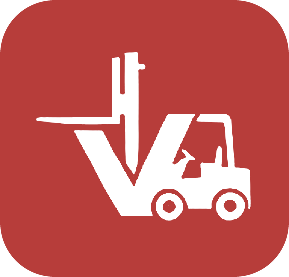
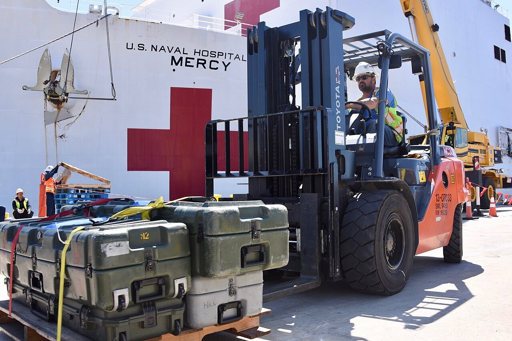
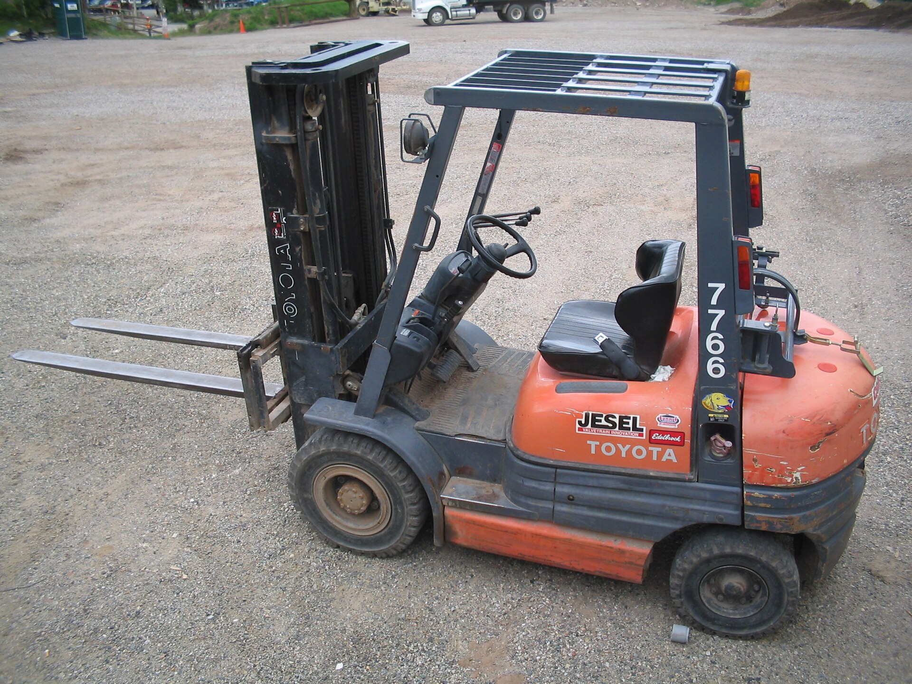

Vista general
2.500 kgCapacidad nominal
Un solo equipo, cuatro datos que importan. Sigue bajando y recorre la máquina.
- 2,5 t
- Carga y descarga
- Estiba
- Con o sin operador

Santa Victoria
Preparando todo

Servicio de montacargas en Chimbote y Nuevo Chimbote
Un montacargas de 2,5 t para carga, descarga y estiba. Elige la modalidad con o sin operador y coordinamos la llegada a tu operación.
Zona de atención en Áncash, Perú
¿Tu operación está fuera de estas zonas? Consulta disponibilidad y coordinamos la atención.

Equipo · Unidad de referencia SV-250
01/05
Vista general
2.500 kgUn solo equipo, cuatro datos que importan. Sigue bajando y recorre la máquina.
01 · Mástil y uñas
4,50 mMástil de dos etapas y uñas de 1,15 m con desplazamiento lateral hidráulico.
02 · Cabina y controles
3 comandosAsiento con suspensión hidráulica y volante de radio reducido.
03 · Batería y chasis
48 V · 6 hBatería de 500 Ah extraíble por lateral, contrapeso de grafito y neumáticos de poliuretano.
04 · Giro
1,85 mEntra en pasillos de 2,60 m y maniobra casi sobre su propio eje.
Sigue bajando
Dos formas de alquilar
Es el mismo montacargas de 2,5 t, pero cambia quién lo maneja. Cada modalidad tiene su tarifa: cuéntanos qué tienes que mover y cotizamos la modalidad que más te convenga.
01
Vamos con el equipo y una persona a cargo de la maniobra. Sirve cuando tu operación no cuenta con un operador propio disponible.
02
Solo el montacargas, para que lo opere tu propio personal. Pensado para operaciones que ya cuentan con quien lo maneje.
Por qué nos eligen
01
Trabajamos con un montacargas de 2,5 t. No dependemos de terceros ni de intermediarios: el equipo que cotizas es el mismo que llega a tu operación.
02
Si el equipo se detiene, lo atendemos en el momento. La idea es simple: que tu carga no espere.
03
Un único equipo, cuidado y disponible: cuando lo necesitas, está operativo para tu trabajo.
¿Te convenció el equipo?